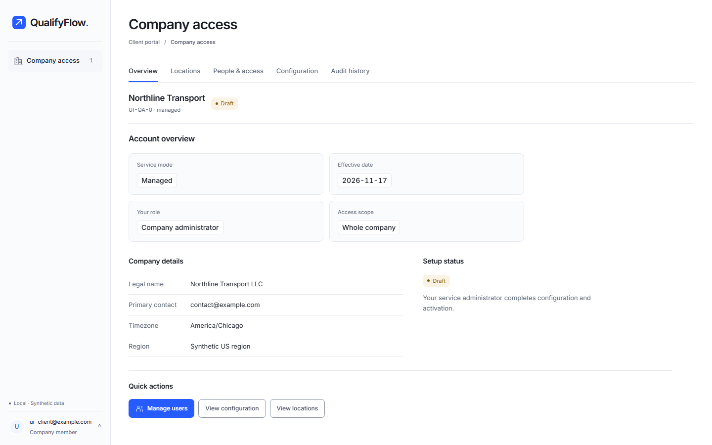
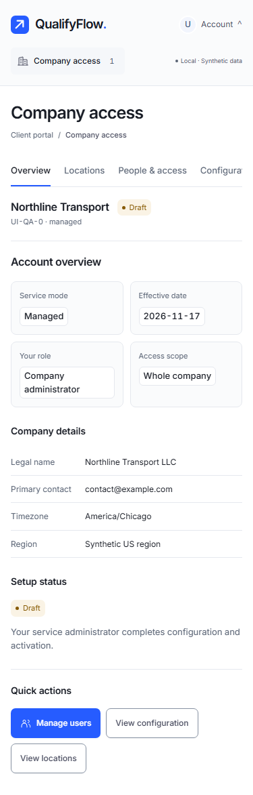
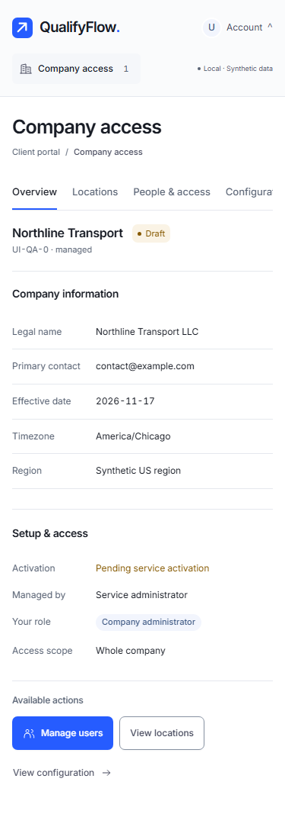

Company information, without metadata cards.
The working shell and management tabs are preserved. Overview uses related information columns, plain values, one account-state indicator and real management actions beside access context. These are actual synthetic-data browser captures.
Desktop · 1440px


Phone · 375px


Management tabs remain functional
Use the links to inspect actual Locations, member/invitation management, Configuration and Audit. Actor/target identifiers in Audit come from the existing authorized API, with full values available in native disclosures.


M2 was not started. No new fonts, palette, sidebar redesign or backend rules were introduced.